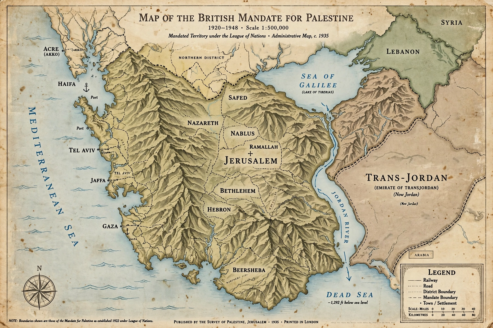

The British Mandate for Palestine was a League of Nations mandate for British administration of Palestine and Transjordan, territories formerly part of the Ottoman Empire, in effect 1920-1948 (legally from 1923).

Incorporated the Balfour Declaration (1917) favouring a Jewish national home while protecting rights of existing non-Jewish communities. Arab-Jewish tensions, 1936-39 Arab revolt, WWII, Holocaust, and UN Partition Plan (1947) followed. Mandate ended 14 May 1948 with Israeli Declaration of Independence and 1948 Arab-Israeli War.
Central to Israeli-Palestinian conflict origins. See Mandatory Palestine, Balfour Declaration.